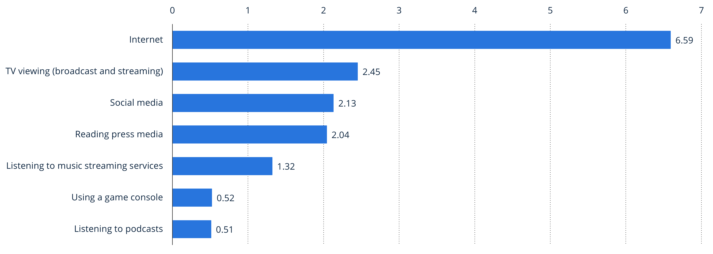
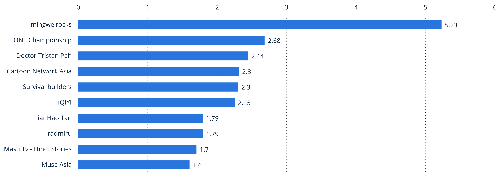
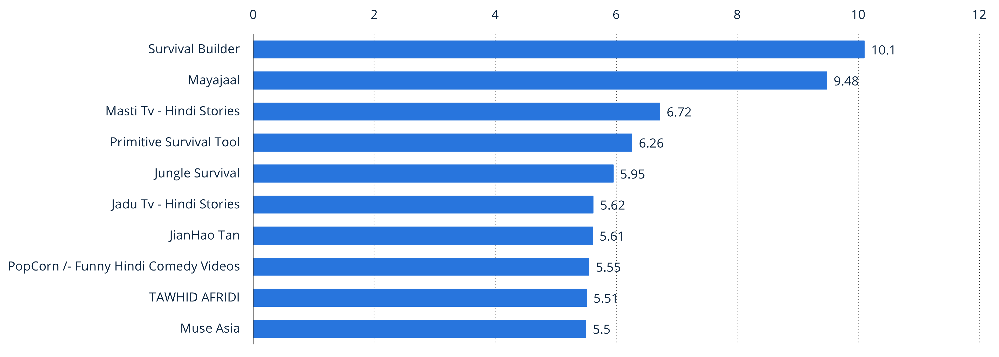

Social Media in Singapore
The average time spent using online media in Singapore in Q3 2022, by activity (in hours and minutes per day)
The most popular Youtube channels in Singapore as of October 2022, by number of video views (in billions)
The most popular Youtube channels in Singapore as of October 2022, by number of subscribers (in millions)
Introduction
My topic of choice covers Social Media in Singapore. More specifically, I will be investigating how social media usage has evolved over the past decade in Singapore, and the key trends that are influencing these changes.
The average time spent using online media in Singapore in Q3 2022, by activity (in hours and minutes per day)

The most popular Youtube channels in Singapore as of October 2022, by number of video views (in billions)

The most popular Youtube channels in Singapore as of October 2022, by number of subscribers (in millions)
